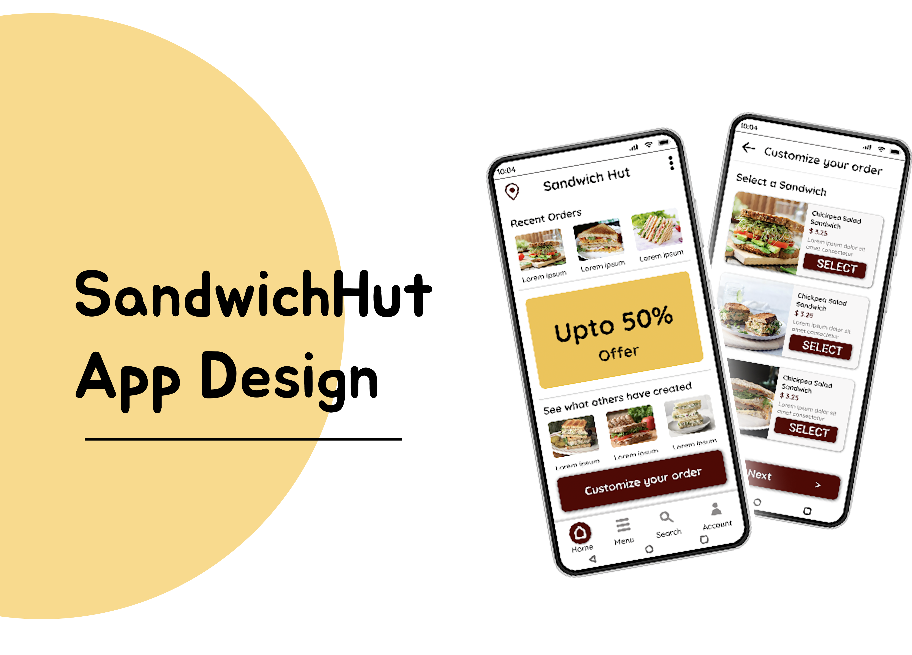
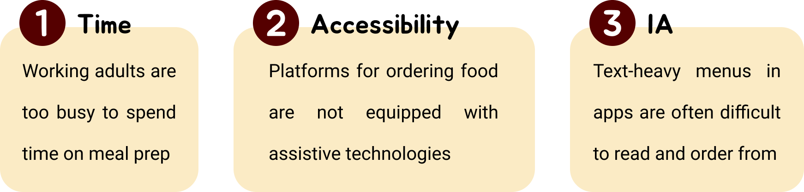
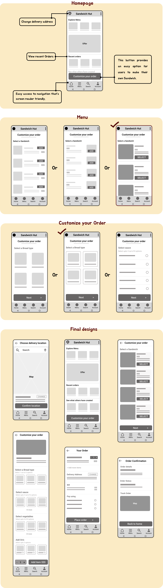
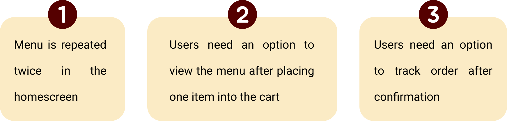
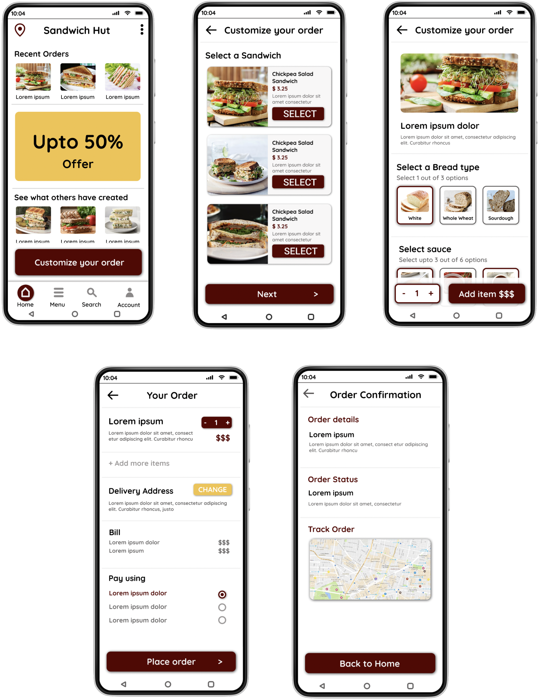
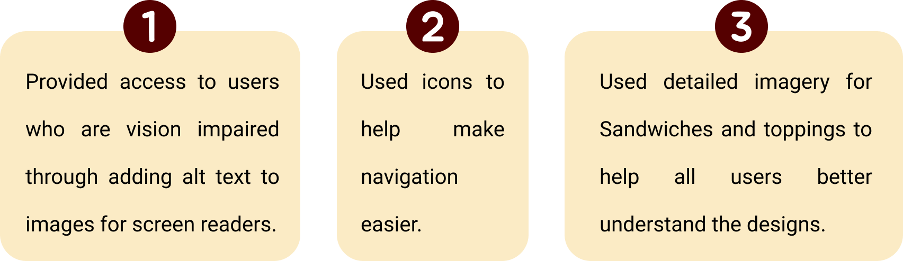
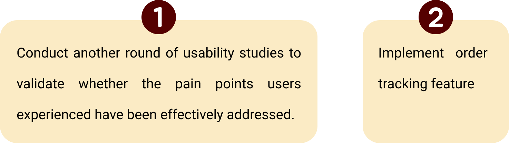

Project Overview
Understanding the User
User Research: Summary
I conducted interviews and created empathy maps to understand the users I’m designing for and their needs. A primary user group identified through research was working adults who don’t have time to cook meals. This user group confirmed initial assumptions about SandwichHut customers, but research also revealed that time was not the only factor limiting users from cooking at home. Other user problems included obligations, interests, or challenges that make it difficult to get groceries for cooking or go to restaurants in-person.User Research: Pain points
Starting the Design
Digital Wireframes
As the initial design phase continued, I made sure to base screen designs on feedback and findings from the user research. Usability Study findings
Findings from the usability study helped guide the designs from wireframes to mockups Refining the Design
Key Mockups
Accessibility Considerations
Going Forward
Next Steps
